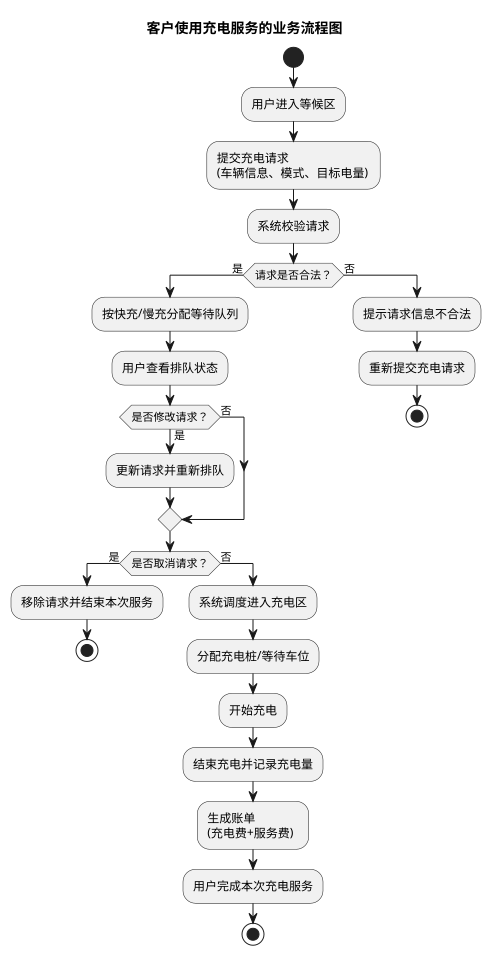
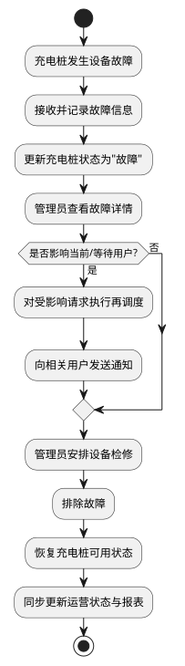
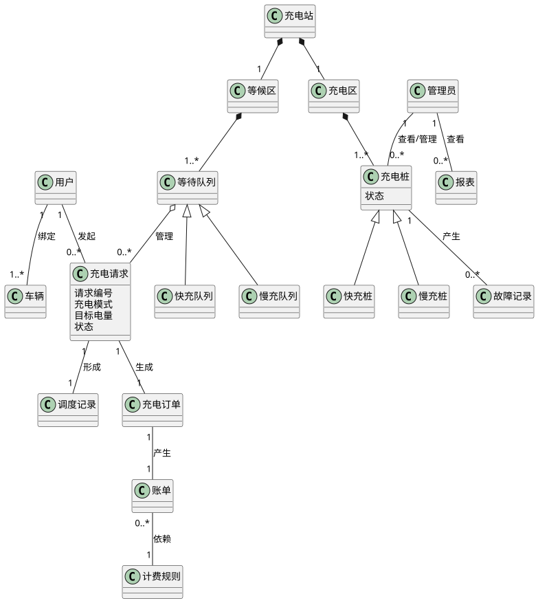
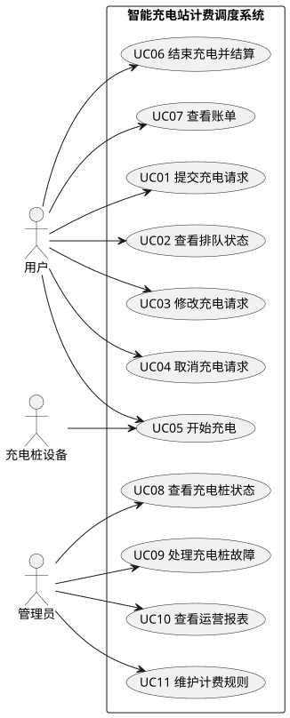
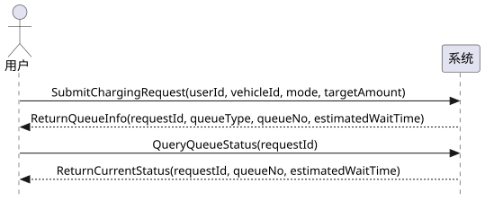
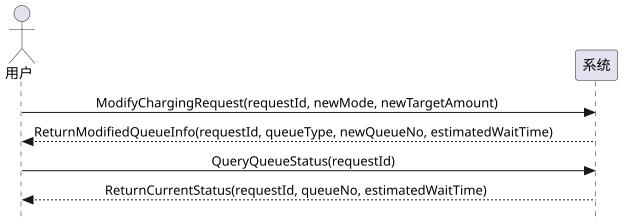
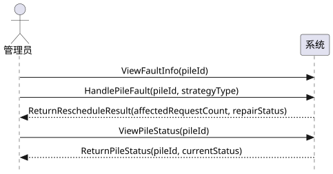

1. 第一章：系统背景
1.1 当前系统的核心业务介绍
1.2 当前系统的业务流程
1.2.1 客户使用充电服务的流程
1.2.2 管理员处理充电桩故障的流程
1.3 领域模型
2. 第二章：用例模型
2.1 用例图
2.1.1 识别角色
2.1.2 识别用例
2.1.3 用例图
2.2 系统顺序图及操作契约
2.2.1 UC01 提交充电请求
2.2.2 UC03 修改充电请求
2.2.3 UC06 结束充电并结算
2.2.4 UC09 处理充电桩故障
3. 工作量统计
波普特大学智能充电站面向校内电动汽车用户提供统一的充电计费与调度服务，其核心目标是在保证服务公平性和管理可行性的前提下，尽可能缩短用户完成一次充电服务所需的总时间，即充电时间与排队等待时间之和。为实现这一目标，系统需要对车辆进入充电站后的请求提交、排队等待、调度分配、开始充电、结束充电、费用计算以及异常处理等业务进行统一管理。
从业务组成上看，充电站主要由等候区和充电区两部分构成。用户驾驶车辆到达充电站后，首先进入等候区，并通过用户客户端提交充电请求。请求中通常包含车辆信息、所选择的充电模式、期望充电量等内容。系统在接收到请求后，根据用户选择的充电模式，将其划入对应的等待队列。由于系统同时提供快充与慢充两种服务模式，因此在业务上需要分别维护不同的等待队列，并根据实际资源情况进行调度。
在充电资源管理方面，充电区设置若干快充桩和慢充桩，每个充电桩周围还配置有限的等待车位，用于组织车辆有序进入充电区并等待实际充电。系统在调度过程中，需要综合考虑当前各充电桩的使用状态、排队情况以及用户所需充电量等因素，将处于等候区中的车辆调入充电区，并进一步为其分配合适的充电桩。系统调度的核心原则是，使被调度车辆完成本次服务的预计总耗时尽可能短，从而提高整体运行效率和用户体验。
在计费业务方面，系统依据实际充电量、服务费用以及分时电价规则生成账单。总费用由充电费和服务费两部分组成，其中充电费与电价时段直接相关，服务费体现充电站提供服务和调度管理的成本。除正常充电业务外，系统还需要支持用户修改请求、取消请求以及充电桩故障后的再调度等动态场景。管理员通过管理员客户端查看充电桩运行状态、处理故障并查看运营报表，服务器端负责维护全部业务数据和规则，实现整个充电站的统一运行控制。
综上所述，波普特大学智能充电站计费调度系统的核心业务可以概括为：围绕“用户充电请求”这一主线，完成从请求接收、排队组织、资源调度、充电服务、费用结算到异常处理的全过程管理，并通过合理的调度策略和计费机制提升充电站整体运行效率和服务质量。
用户驾驶车辆进入等候区后，通过用户客户端提交充电请求。系统校验请求信息，并按快充或慢充模式将该请求加入对应等待队列。用户在等待期间可以查看排队状态，也可以根据自身需求修改或取消请求。当充电区出现可分配的车位和充电资源时，系统按照调度策略叫号并安排用户进入充电区，由系统为其分配具体充电桩。充电开始后，系统持续记录充电过程信息；充电结束后，系统依据实际充电量、服务费和分时电价生成账单，用户完成本次充电服务，系统释放资源并更新队列状态。

当充电桩发生设备故障时，系统首先接收并记录故障信息，并将对应充电桩状态更新为故障。管理员查看故障详情后，判断是否影响当前正在充电或等待充电的用户；若存在影响，则系统对受影响请求执行再调度，并向相关用户发送通知。管理员安排设备检修，在故障排除后恢复充电桩的可用状态，并同步更新系统中的运营状态与统计报表。

（1）关键名词抽取） 根据题目背景与业务流程，可抽取得到的关键业务词汇包括：用户、管理员、车辆、充电站、等候区、充电区、等待队列、快充队列、慢充队列、充电桩、快充桩、慢充桩、充电请求、调度记录、充电订单、账单、计费规则、故障记录、报表等。
（2）概念类关系说明） 一个用户可绑定一辆或多辆车辆，并可发起多个充电请求；一个充电站由等候区和充电区组成，充电区包含多个充电桩；等待队列用于管理尚未完成服务的充电请求，并按快充/慢充进一步细分；充电请求在被系统调度后会形成调度记录，并在服务完成后生成充电订单和账单；账单依据计费规则计算；充电桩在运行中可能产生故障记录；管理员负责查看充电桩状态与运营报表。

| 角色名称 | 说明 | 与系统的关系 |
|---|---|---|
| 用户 | 驾驶电动汽车并申请充电服务的校内用户 | 通过客户端提交请求、查看排队、修改/取消请求、结算与查看账单 |
| 管理员 | 负责充电站运营管理的工作人员 | 查看充电桩状态、处理故障、查看报表、维护计费规则 |
| 充电桩设备 | 实际提供充电服务并上报运行状态的设备 | 向系统上报开始充电、结束充电、故障状态等信息 |
| 编号 | 用例名称 | 主要参与者 | 简要说明 |
|---|---|---|---|
| UC01 | 提交充电请求 | 用户 | 用户在等候区提交充电模式和目标电量等信息 |
| UC02 | 查看排队状态 | 用户 | 用户查看当前队列位置、预计等待时间和调度结果 |
| UC03 | 修改充电请求 | 用户 | 用户修改充电模式或目标电量，系统重新计算排队与调度结果 |
| UC04 | 取消充电请求 | 用户 | 用户取消本次排队申请，系统将请求从队列中移除 |
| UC05 | 开始充电 | 用户/充电桩设备 | 系统分配资源后开始充电并记录状态 |
| UC06 | 结束充电并结算 | 用户 | 系统生成账单并完成费用结算 |
| UC07 | 查看账单 | 用户 | 用户查询本次或历史充电账单信息 |
| UC08 | 查看充电桩状态 | 管理员 | 管理员查看全部充电桩的运行状态和利用情况 |
| UC09 | 处理充电桩故障 | 管理员 | 管理员处理故障并触发受影响车辆的再调度 |
| UC10 | 查看运营报表 | 管理员 | 管理员查看充电次数、费用收入、故障统计等报表 |
| UC11 | 维护计费规则 | 管理员 | 管理员维护服务费和分时电价等基础参数 |
| UC12 | 上报开始充电 | 充电桩设备 | 充电桩设备向系统上报实际开始充电状态 |
| UC13 | 上报结束充电 | 充电桩设备 | 充电桩设备向系统上报实际结束充电状态 |
| UC14 | 上报故障状态 | 充电桩设备 | 充电桩设备向系统上报设备故障信息 |


| 消息中文名 | 消息可编程名称 | 参数列表 |
|---|---|---|
| 提交充电请求 | SubmitChargingRequest | userId, vehicleId, mode, targetAmount |
| 返回排队信息 | ReturnQueueInfo | requestId, queueType, queueNo, estimatedWaitTime |
| 查询排队状态 | QueryQueueStatus | requestId |
| 返回当前状态 | ReturnCurrentStatus | requestId, queueNo, estimatedWaitTime |
| 系统事件 | 操作契约（后置条件） |
|---|---|
| SubmitChargingRequest(userId, vehicleId, mode, targetAmount) | 1. 创建一个新的“充电请求”对象； 2. 充电请求对象与用户对象建立关联； 3. 充电请求对象与车辆对象建立关联； 4. 按 mode 将请求加入对应等待队列； 5. 初始化请求编号、请求时间、目标电量、状态等属性； 6. 创建或更新排队记录。 |
| QueryQueueStatus(requestId) | 1. 检索对应充电请求对象； 2. 读取当前队列位置、预计等待时间和状态； 3. 返回当前排队信息，不产生新的永久对象。 |

| 消息中文名 | 消息可编程名称 | 参数列表 |
|---|---|---|
| 修改充电请求 | ModifyChargingRequest | requestId, newMode, newTargetAmount |
| 返回修改后的排队信息 | ReturnModifiedQueueInfo | requestId, queueType, newQueueNo, estimatedWaitTime |
| 查询排队状态 | QueryQueueStatus | requestId |
| 返回当前状态 | ReturnCurrentStatus | requestId, queueNo, estimatedWaitTime |
| 系统事件 | 操作契约（后置条件） |
|---|---|
| ModifyChargingRequest(requestId, newMode, newTargetAmount) | 1. 检索并激活对应充电请求对象； 2. 更新充电模式或目标电量属性； 3. 将该请求从原等待队列中移除； 4. 将该请求重新加入新的对应等待队列； 5. 更新排队记录和调度结果； 6. 保存新的队列编号和预计等待信息。 |
| QueryQueueStatus(requestId) | 1. 检索对应充电请求对象； 2. 返回修改后的队列位置、预计等待时间和状态。 |
| 消息中文名 | 消息可编程名称 | 参数列表 |
|---|---|---|
| 请求生成账单 | RequestBilling | requestId |
| 返回账单 | ReturnBill | billId, chargeFee, serviceFee, totalFee |
| 确认支付 | ConfirmPayment | billId, paymentMethod |
| 返回支付结果 | ReturnPaymentResult | result, finishTime |
| 系统事件 | 操作契约（后置条件） |
|---|---|
| RequestBilling(requestId) | 1. 检索对应充电订单对象； 2. 记录实际结束时间和实际充电量； 3. 创建或更新账单对象； 4. 根据计费规则计算充电费和服务费； 5. 保存总费用结果并返回账单。 |
| ConfirmPayment(billId, paymentMethod) | 1. 检索账单对象； 2. 更新账单支付状态为“已支付”； 3. 更新充电订单状态为“已完成”； 4. 释放对应充电桩资源并更新其状态； 5. 更新相关统计数据，用于报表生成。 |

| 消息中文名 | 消息可编程名称 | 参数列表 |
|---|---|---|
| 查看故障信息 | ViewFaultInfo | pileId |
| 处理充电桩故障 | HandlePileFault | pileId, strategyType |
| 返回再调度结果 | ReturnRescheduleResult | affectedRequestCount, repairStatus |
| 查看充电桩状态 | ViewPileStatus | pileId |
| 返回充电桩状态 | ReturnPileStatus | pileId, currentStatus |
| 系统事件 | 操作契约（后置条件） |
|---|---|
| ViewFaultInfo(pileId) | 1. 检索指定充电桩对象； 2. 读取对应故障记录对象及当前运行状态； 3. 返回故障详情，不产生新的永久对象。 |
| HandlePileFault(pileId, strategyType) | 1. 创建新的故障记录对象； 2. 将故障记录与对应充电桩对象建立关联； 3. 更新充电桩状态为“故障”； 4. 对受影响的排队请求重新调度； 5. 更新调度记录与相关请求状态； 6. 保存处理策略和处理结果。 |
| ViewPileStatus(pileId) | 1. 检索对应充电桩对象； 2. 返回当前状态、是否可用及故障处理进度。 |
为保证各部分内容完整衔接并满足文档规范性要求，本组采用“分块完成初稿、组长统一整合与审核”的协作方式。组长郝政伟负责总体需求梳理、核心业务介绍撰写、术语统一、各图表内容统稿、SSD 与操作契约审核、文档排版整合及最终提交；其余成员分别承担业务流程分析、领域模型初稿、用例图与 SSD 初稿、操作契约与格式检查等工作。整体上，各成员均参与了作业完成过程，其中组长承担了更多统筹、整合与质量控制工作。
| 模块 | 郝政伟（组长） | 李良顺 | 蔡禹煊 | 周柄名 | 张睿渤 |
|---|---|---|---|---|---|
| 核心业务介绍 | 负责主要撰写、修改统稿 | 参与业务规则讨论 | 参与术语整理 | 参与内容校对 | 参与格式检查 |
| 业务流程活动图 | 确定流程边界并审核图示 | 负责“客户使用充电服务”流程分析与初稿 | 协助节点整理 | 协助图示检查 | 协助文字说明整理 |
| 领域模型 | 负责概念类筛选、关系修订与统稿 | 参与名词抽取 | 负责关键名词抽取、概念关系整理与类图初稿 | 协助检查类间关系 | 参与文字校对 |
| 角色识别与用例识别 | 负责最终确定角色和核心用例 | 参与用户侧用例讨论 | 参与管理员侧用例讨论 | 负责识别结果整理 | 参与补充说明 |
| 系统级用例图 | 负责审核与修改 | 参与需求核对 | 参与元素整理 | 负责用例图初稿绘制 | 协助格式统一 |
| SSD | 负责确定核心用例并审核时序逻辑 | 参与 UC01 流程讨论 | 参与 UC03 逻辑讨论 | 负责 SSD 初稿绘制 | 协助消息表整理 |
| 操作契约 | 负责统一后置条件写法并最终统稿 | 参与 UC01 契约讨论 | 参与 UC03 契约讨论 | 参与 UC06 契约讨论 | 负责操作契约初稿整理 |
| 文档排版与提交 | 负责全文排版、编号、目录检查、PDF 导出与提交 | 协助检查 | 协助检查 | 协助检查 | 协助检查 |
从工作量分配看，郝政伟作为组长承担了较多的统筹、写作、整合和审核任务；其他组员围绕对应模块完成资料整理、图表初稿或文字说明，并共同参与最终检查。该分工方式既体现了组长在项目推进中的主导作用，也保证了各组员均参与了模型构建与文档形成过程。